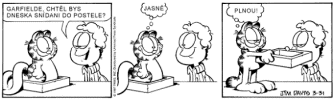
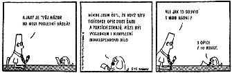

|
Komiks
Lekce 11
Komiks (též psáno comics) je pomìrnì mladý literární druh, který vznikl poèátkem 20. století. Øada literárních vìdcù ho ale za plnohodnotný literární druh, který by se vyrovnal poezii, próze nebo dramatu, nepovažuje. Naopak fanoušci komiksu tvrdí, že nejstaršími komiksy byly nástìnné malby ve starovìkém Egyptì (obsahovaly text - hieroglyfy a obrázky - napø. výjevy z mytologie)…
Ménì radikální stoupenci komiksu nacházejí jeho poèátky v tzv. stripech, které vycházejí v novinách. Jsou to kreslené "proužky", složené vìtšinou ze tøí jednoduchých obrázkù doplnìných textem "v bublinách". Pokud ètete noviny, urèitì znáte stripové série o koucourovi Garfieldovi nebo o zamìstnanci Dilbertovi.

Strip i komiks mají leccos spoleèného. Napøíklad výrazové prostøedky - promluva postavy (viz první obrázek) je vyjádøena bublinou vedoucí od jejích úst. To, co si postava myslí, zase naznaèuje bublina vedoucí od hlavy (viz obrázek 2 a 3). Vidíme tedy pøed sebou jakousi krátkou dramatickou scénku… A komiks má skuteènì velmi blízko ke scénáøi - máme tu postavy (vìtšinou velmi typizované - vìènì hladový a neuvìøitelnì líný kocour a jeho trochu natvrdlý pán), scénu a dialogy (pøípadnì monology). Na rozdíl od divadelního scénáøe, ale navíc scénu i postavy pøímo vidíme. Proto je lepší pøirovnat komiks k filmu. Vzpomeòte si na nìmé filmy, kde se støídaly filmové zábìry dìje s kartièkami, na kterých se dìj slovnì komentoval…
Komiks bývá považován za žánr pokleslý a vìtšina komiksù tento názor potvrzuje. Všichni ti Supermani, Batmani a další geneticky nebo jinak upravení lidé s nejrùznìjšími nevídanými schopnostmi bojující proti zlu, erotické komiksy pro dospìlé, slavný Ètyølístek pro dìti, satirický Zelený Raoul v Reflexu, to všechno jsou dílka, která umìlecky pøíliš nevynikají...
Našlo by se ale pár komiksù, které objevným zpùsobem spojují obraz s textem nebo pøedkládají opravdu silný pøíbìh. Øíká se jim umìlecké komiksy a asi nejslavnìjším zástupcem této skupiny je Maus z pera Arta Spiegelmana. Je to èernobílý komiks, který pojednává o holocaustu. V èeském pøekladu vyšel v prestižním nakladatelství TORST a vøele vám ho doporuèuji ke shlédnutí. Recenzi na tento komiks si mùžete pøeèíst zde.
Rùzné komiksy najdete na webových stránkách www.komiks.cz nebo www.comics.cz. A samozøejmì také pokud zadáte do nìkterého z vyhledávaèù klíèové slovo komiks, comics, Superman, Garfield atd.
Strip
Úkol 11

Úkol je jednoduchý - pokuste se nakreslit jednu stránku komiksu, pøípadnì jeden strip složený ze tøí obrázkù nebo alespoò kreslený vtip.
|
|
|